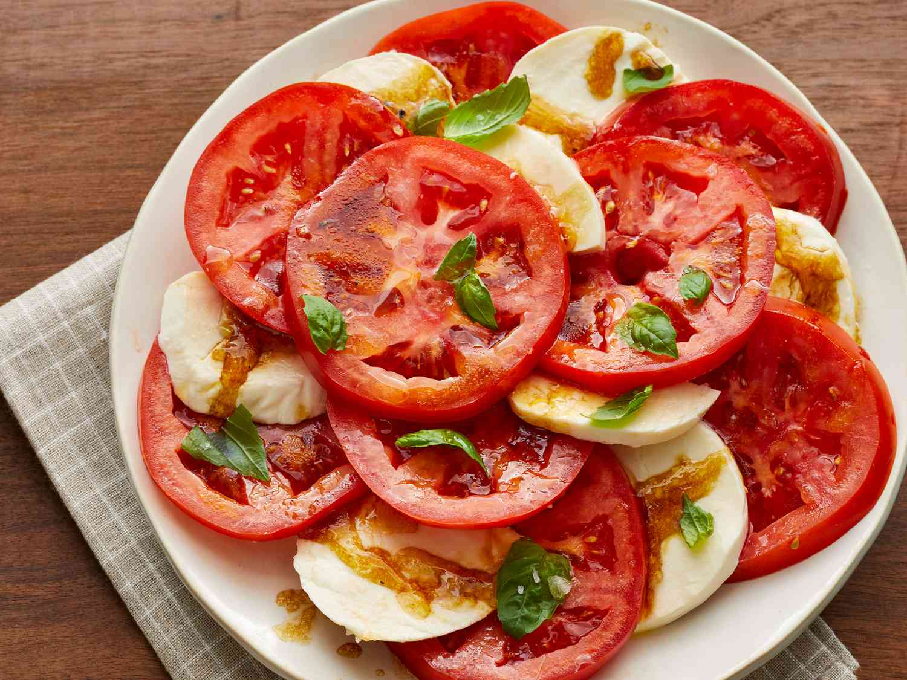

Tomato Mozzarella Salad

Description
A simple and tasty dish that can be made from ingredients you can grow in your own garden! There really is nothing better!
Prep time: 10 mins
Additional time: None
servings: 6
Ingredients
- 3 large tomatoes, sliced
- 8 ounces mozzarella cheese, sliced
- 1/4 cup of olive oil
- 1/4 cup of balsamic vinegar
- 1/4 teaspoon of salf
- 1/8 teaspoon of ground black pepper
- 1/4 cup of minced fresh basil
Steps
- Place tomato and mozzarella slices in an alternating pattern circling the serving platter.
- Combine oil, balsamic vinegar, salt and pepper in a sealable jar; shake well.
- drizzle jar over tomatoes and mozzarella, finally sprinkle with basil